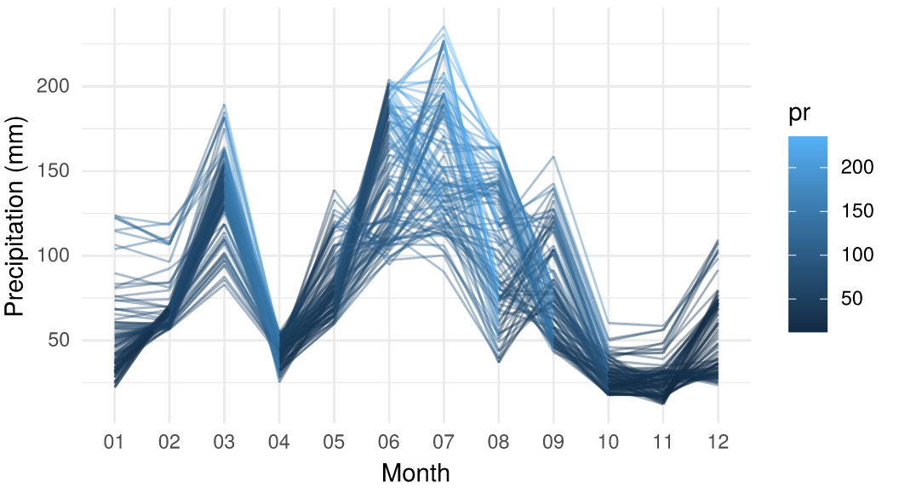
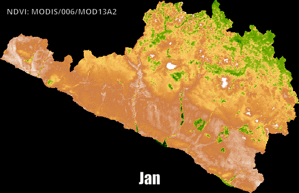

Le package reticulate : R et Python

Introduction à reticulate et son rôle dans l’écosystème R
Le package reticulate est un outil qui permet d’appeler du code Python directement depuis R, créant ainsi un pont entre les deux langages. Comme le décrit sa documentation officielle, « The package enables you to reticulate Python code into R, creating a new breed of project that weaves together the two languages ». En d’autres termes, reticulate fournit une panoplie d’outils pour faire interagir R et Python de manière fluide au sein d’une même session R. Ceci ouvre la voie à une interopérabilité complète entre ces deux écosystèmes de programmation, permettant aux utilisateurs de combiner les points forts de chacun.
0.1 Pourquoi R et Python ensemble ?
R est réputé pour ses capacités statistiques et de visualisation, tandis que Python excelle dans des domaines comme le web scraping, le machine learning ou l’automatisation. Plutôt que de choisir l’un ou l’autre, reticulate offre la possibilité d’utiliser simultanément R et Python dans un même projet. Par exemple, un analyste R peut exploiter une librairie Python inexistante en R sans quitter son environnement R. De même, des données manipulées en R peuvent être passées à une fonction Python pour un traitement spécifique, puis les résultats ramenés en R. Ce genre d’intégration était autrefois fastidieux (il fallait écrire des fichiers intermédiaires, utiliser des APIs externes ou des appels système), mais reticulate simplifie radicalement le processus en intégrant un interpréteur Python “vivant” à l’intérieur de R.
0.2 Place dans l’écosystème R
Reticulate a été développé par RStudio (désormais Posit) et s’est imposé comme la solution de référence pour la collaboration entre R et Python. Il est à la base de nombreuses autres initiatives d’intégration, par exemple : les documents R Markdown peuvent inclure des chunks de code Python grâce à reticulate, et des packages R comme keras ou tensorflow (interfaces R pour ces frameworks de deep learning) utilisent reticulate en coulisses pour appeler les bibliothèques Python correspondantes. En somme, reticulate est devenu un composant clé pour tous ceux qui souhaitent un workflow bilingue R-Python sans couture.
1 Installation et configuration de reticulate
Avant de pouvoir utiliser reticulate, il faut bien sûr l’installer et s’assurer qu’une installation de Python est disponible sur votre système.
1.1 Installation du package reticulate
Le package étant disponible sur CRAN, son installation est classique :
Une fois installé, chargez-le dans votre session R :
Cela suffit pour installer reticulate côté R. Cependant, reticulate interagit avec Python, il faut donc disposer d’un interpréteur Python (version 3 de préférence). Reticulate ne contient pas Python en lui-même, mais offre des outils pour installer ou utiliser une distribution Python.
1.2 Disposer d’un interpréteur Python
Il y a plusieurs manières de configurer Python pour reticulate :
Utiliser une installation Python existante : Si Python est déjà installé sur votre machine (par exemple Python 3 installé globalement ou via Anaconda), reticulate peut le détecter automatiquement. Vous pouvez vérifier quelle version de Python est trouvée par défaut avec
py_config()après avoir chargé reticulate. Si vous avez plusieurs versions de Python, reticulate choisira généralement la première disponible dans le PATH, ou un environnement spécifique s’il a été configuré (voir ci-dessous).Spécifier explicitement un interpréteur ou un environnement : Vous pouvez indiquer à reticulate quel Python utiliser. Par exemple, pour pointer vers un exécutable Python précis, on utilise
use_python("/chemin/vers/python")(par exempleuse_python("/usr/bin/python3")sous Linux) avant d’appeler toute fonction Python. De même, si vous souhaitez utiliser un environnement virtuel ou Conda particulier, reticulate proposeuse_virtualenv("nom_env")pour un environnement virtuel virtualenv ouuse_condaenv("nom_env")pour un environnement conda. Par exemple :
Ces commandes doivent être exécutées juste après le library(reticulate) et avant d’utiliser Python. Vous pouvez aussi définir la variable d’environnement RETICULATE_PYTHON dans votre .Renviron ou .Rprofile pour qu’une certaine installation de Python soit toujours utilisée par défaut.
- Installer une distribution Python légère via reticulate : Si vous n’avez pas Python ou souhaitez un environnement isolé, reticulate peut installer Miniconda automatiquement. Miniconda est une distribution légère qui gère des environnements conda. Avec la fonction
install_miniconda(), reticulate télécharge et installe Miniconda pour vous. Par défaut, reticulate créera un environnement conda nommé “r-reticulate” (sauf si vous en spécifiez un autre) et y installera l’interpréteur Python. Par exemple :
Après cela, l’environnement “r-reticulate” sera disponible et pourra être utilisé. En l’absence d’instructions contraires, reticulate utilisera automatiquement cet environnement “r-reticulate” comme Python par défaut. Vous pouvez vérifier la liste des environnements conda disponibles avec conda_list() et voir que “r-reticulate” existe.
Une fois Python configuré, vous aurez souvent besoin d’installer des librairies Python supplémentaires (comme pandas, numpy, etc.) pour vos usages. Vous pouvez le faire en dehors de R (par exemple via pip ou conda) ou directement depuis R via reticulate. Le package fournit la fonction py_install() pour installer des modules Python directement depuis R. Par exemple :
py_install("pandas") # installe le package Python "pandas" dans l'environnement utilisé
py_install(c("numpy", "matplotlib"), envname = "r-reticulate")Selon le cas, py_install() choisira d’utiliser pip ou conda pour l’installation (vous pouvez forcer le mode avec l’argument method = "pip" ou "conda"). Il existe aussi des fonctions dédiées comme conda_install() ou virtualenv_install() si vous gérez spécifiquement ces types d’environnements.
En résumé, l’installation de reticulate est simple côté R, et il faut ensuite s’assurer que Python est accessible. La solution recommandée pour débuter est souvent d’utiliser Miniconda via install_miniconda(), car cela garantit un environnement Python propre, géré par R, sans interférer avec d’autres installations Python sur votre système. Une fois cette étape faite, reticulate est prêt à être utilisé.
2 Fonctionnalités principales de reticulate
Une fois configuré, reticulate permet une véritable interopérabilité R-Python. Voici les principales fonctionnalités offertes et comment les utiliser.
2.1 Appeler des fonctions Python depuis R
La fonctionnalité de base de reticulate est d’appeler des modules, fonctions ou classes Python comme si c’étaient des objets R. Pour ce faire, on utilise généralement la fonction import() de reticulate afin de charger un module Python. Cette fonction fonctionne de façon analogue à l’instruction import en Python, mais elle renvoie un objet R représentant le module Python importé.
Par exemple, pour importer le module Python math et utiliser sa fonction sqrt depuis R :
math <- import("math") # importe le module Python "math"
math$sqrt(9) # appelle math.sqrt(9) en Python## [1] 3Ici, math est un objet R qui référence le module Python. On peut appeler la fonction sqrt avec la syntaxe $ comme s’il s’agissait d’une liste ou d’un objet R, mais en réalité l’appel est exécuté par l’interpréteur Python en arrière-plan. Reticulate gère automatiquement le passage de l’argument (9 de R vers Python) et le retour du résultat (3 de Python vers R).
On peut de la même manière importer des packages Python plus complexes. Par exemple, importons le package numpy (couramment utilisé pour le calcul numérique en Python) et utilisons-le :
np <- import("numpy")
arr <- np$array(c(1, 2, 3, 4)) # crée un numpy array à partir d’un vecteur R
np$mean(arr) # calcule la moyenne via numpy## [1] 2.5Dans cet exemple, le vecteur R c(1,2,3,4) a été converti en un tableau numpy, puis la fonction mean de numpy a opéré dessus. Reticulate rend ces interactions quasi transparentes. En fait, lorsqu’on appelle Python depuis R, les types de données R sont convertis automatiquement en types Python équivalents, et vice-versa lors du retour.
2.2 Conversion automatique des types de données
Ce mécanisme de conversion de type est central dans reticulate, car il permet d’échanger des données entre R et Python sans effort manuel la plupart du temps. Le tableau ci-dessous résume quelques conversions automatiques courantes effectuées par reticulate :
| Type R | Converti en type Python | Exemple (R → Python) |
|---|---|---|
| Vecteur atomique (1 élément) | Scalaire Python | 42 (numérique R) devient 42 (int/float Python) |
| Vecteur atomique (plusieurs éléments) ou liste non nommée | list Python | c(1, 2, 3) (vecteur R) devient [1, 2, 3] (list Python) |
| Liste nommée | dict Python | list(a=1, b=2) devient {'a': 1, 'b': 2} |
| Matrice ou tableau (matrix/array) | numpy.ndarray | matrix(1:4, ncol=2) devient un ndarray 2x2 |
| Data frame | pandas.DataFrame | data.frame(x=1:3, y=c("a","b","c")) devient un DataFrame pandas |
| Fonction R | function Python (appelable) | function(x) x+1 devient une fonction Python équivalente |
NULL, TRUE, FALSE |
None, True, False |
NULL (R) devient None (Python), etc. |
Tableau : Correspondances automatiques de quelques types R ↔︎ Python avec reticulate. Lorsqu’une valeur Python d’un type inconnu (classe personnalisée) est renvoyée vers R, reticulate ne la convertit pas en un type R arbitraire mais fournit une référence à l’objet Python. Vous pourrez alors manipuler cet objet en R (appeler ses méthodes, accéder à ses attributs) comme s’il s’agissait d’une instance R, tant que l’objet Python sous-jacent existe.
Il est également possible de forcer des conversions ou de faire des conversions manuelles si besoin, via par exemple les fonctions r_to_py() (convertir un objet R en objet Python explicitement) et py_to_r() (l’inverse). Dans la grande majorité des cas, reticulate gère tout cela automatiquement, mais ces fonctions peuvent être utiles pour affiner le comportement, notamment si on souhaite désactiver la conversion automatique sur un objet (on peut importer un module avec convert = FALSE pour obtenir des objets Python “bruts” manipulables manuellement).
2.3 Échange de variables entre R et Python
En plus d’appeler directement des fonctions, reticulate permet de partager des variables entre les deux langages. Deux approches existent :
- Utiliser le pseudo-objet
pyen R : Toutes les variables Python créées lors d’appels via reticulate sont accessibles en R via l’objet spécialpy. Par exemple, si en Python on assigne une valeur à une variable nomméefoo, on pourra y accéder en R avecpy$foo. Inversement, côté Python, un objet spécialrpermet d’accéder aux objets R. Par exemple,r.baren Python fera référence à la variable R nomméebar.
Pour illustrer, on peut exécuter du code Python arbitraire avec py_run_string() ou py_run_file(). Supposons qu’on veuille exécuter un petit script Python qui utilise une variable R :
## [1] 43Dans ce snippet, on a utilisé r.x dans le code Python pour accéder à la variable R x. Le script Python a créé une variable y, qu’on retrouve ensuite en R via py$y. Ce mécanisme est très pratique pour orchestrer des échanges complexes sans avoir à gérer manuellement des fichiers ou des sorties : tout se passe en mémoire partagée.
- Sourcing de code Python avec retour de variables : Une autre manière est d’utiliser
source_python("script.py")pour exécuter un fichier Python. Toutes les fonctions et classes définies dans ce fichier deviennent directement disponibles en R comme si c’étaient des fonctions R. Par exemple, si le fichierscript.pycontient une fonctiondef foo(x): return x*2, alors aprèssource_python("script.py"), on pourra appelerfoo(21)dans R et obtenir 42 en résultat. De même, les variables globales créées dans le script Python pourront être accessibles viapy$...en R. Lesource_python()agit en quelque sorte comme lesource()de R, mais pour Python.
2.4 Exécution de scripts Python et sessions interactives
Outre source_python() et py_run_string(), reticulate offre d’autres outils pour exécuter du code Python :
py_run_file("fichier.py"): similaire àsource_python(), à la différence qu’il ne crée pas de fonctions R. Il exécute le script Python donné et retourne un dictionnaire contenant les variables globales du script. C’est utile si l’on souhaite isoler l’exécution et récupérer manuellement certains résultats.Python interactif dans la console R : La fonction
repl_python()ouvre un interpréteur Python interactif au sein de la session R. Vous vous retrouvez alors avec une invite Python (>>>) dans la console, comme si vous étiez dans un terminal Python classique, mais toujours dans RStudio ou votre R console. Vous pouvez y taper des commandes Python interactives. Pour revenir à R, il suffit de taperexitouquit(). Ce mode est pratique pour tester rapidement du code Python sans quitter R. De plus, les objets créés sont persistants dans la session reticulate, donc accessibles ensuite viapy$en R une fois que vous quittez le REPL Python.R Markdown et notebooks : Bien que ce ne soit pas une fonction du package en soi, il faut noter que reticulate s’intègre avec R Markdown. Vous pouvez inclure des chunks Python (
{python} ...) dans un document R Markdown, et grâce à reticulate, ces chunks pourront partager leurs variables avec les chunks R. Par exemple, une variable Python définie dans un chunk pourra être récupérée dans un chunk R suivant viapy$var. Cette interopérabilité rend les notebooks multi-langages très puissants pour la data science.
2.5 Interopérabilité avancée et limitations
Reticulate supporte la plupart des cas d’usage courants, mais il est utile de connaître quelques détails supplémentaires :
Appels de méthodes et attributs Python : Si vous importez une classe ou créez un objet Python en R, vous pouvez appeler ses méthodes via
$. Par exempleobj$method(arg)appelleraobj.method(arg)en Python. Les attributs se récupèrent de la même façon (obj$attribute). S’il y a un nom qui entre en conflit avec un nom de fonction R (par exemple une méthode nomméeprint), vous pouvez utiliser la syntaxeobj[[\"print\"]]().Conversion fine des types : Par défaut, la conversion automatique peut être désactivée en important un module avec
convert = FALSE. Dans ce cas, les objets Python retournés restent des références Python (classepy_object). On peut les manipuler seulement via Python. Il faut alors utiliserpy_to_r()manuellement pour convertir un résultat quand on le souhaite. Cette approche est utile si la conversion automatique pose problème (cas de types non standard ou lorsque l’on souhaite vraiment garder l’objet Python natif).Limitations : Tout ce qui est fait via reticulate s’exécute dans un seul interpréteur Python par session R. Cela signifie que vous ne pouvez pas simultanément faire tourner deux environnements Python isolés dans un même processus R. Par exemple, vous ne pouvez pas importer deux versions différentes d’une même librairie Python dans une session R donnée. De plus, certaines fonctionnalités Python qui requièrent un vrai interpréteur interactif (par ex. les boucles d’événements async, ou des interfaces graphiques tkinter, etc.) pourraient ne pas fonctionner correctement à travers reticulate, surtout dans un environnement non interactif. Néanmoins, pour l’écrasante majorité des bibliothèques Python orientées calcul, traitement de données, web, etc., reticulate fonctionne parfaitement.
En résumé, reticulate rend possible l’utilisation conjointe de R et Python de façon transparente. Après avoir configuré Python, vous pouvez importer des modules, appeler des fonctions, passer des données d’un langage à l’autre, exécuter des scripts complets, et même interagir avec Python directement dans R. Nous allons maintenant voir quels avantages pratiques on peut en tirer et présenter des cas d’usage typiques.
3 Avantages de reticulate et cas d’usage typiques
L’utilisation de reticulate présente plusieurs avantages clés pour les data scientists, analystes et développeurs qui travaillent avec R :
Combiner le meilleur de deux mondes : Le principal atout est de pouvoir exploiter simultanément les bibliothèques R et Python. Vous n’êtes plus limité par la disponibilité d’une fonction dans un seul langage. Par exemple, si une bibliothèque de machine learning n’existe qu’en Python, vous pouvez l’utiliser dans votre code R via reticulate. À l’inverse, un utilisateur Python peut bénéficier des outils de visualisation de R sans réécrire son code, en passant par un script R utilisant reticulate.
Réutilisation de code existant : Dans un contexte professionnel, il n’est pas rare d’avoir des équipes mixtes ou un héritage de code dans différents langages. Avec reticulate, une équipe R peut appeler directement les fonctions écrites par une équipe Python (et vice-versa, bien que reticulate soit principalement pensé du point de vue R appelant Python). Cela évite de redévelopper des solutions déjà fonctionnelles dans l’autre langage. Par exemple, si un collègue a un script Python de web scraping efficace, vous pouvez l’invoquer depuis R et récupérer les données sans tout recoder en R.
Interopérabilité dans les rapports et applications : Grâce à reticulate, il est possible de créer des rapports R Markdown ou des applications Shiny qui utilisent Python en coulisse. Par exemple, un rapport peut comporter une section d’analyse faite en Python (via un chunk Python) et une section de visualisation en R, le tout s’exécutant de manière cohérente. De même, Shiny (application web en R) peut appeler du code Python pour certaines fonctionnalités (par exemple pour utiliser une librairie d’intelligence artificielle en Python), et afficher le résultat dans l’interface R Shiny. Tout cela se fait sans que l’utilisateur final ne se rende compte du mélange des langages.
Accès aux écosystèmes de packages complets : R et Python ont chacun un écosystème riche de milliers de packages. En combinant les deux, vous avez accès à un éventail incroyablement large de fonctionnalités. Par exemple, vous pouvez utiliser scikit-learn (Python) pour entraîner un modèle de machine learning, puis utiliser ggplot2 (R) pour visualiser les résultats, le tout dans un même script. Un autre cas fréquent est d’utiliser pandas (Python) pour certaines manipulations de données complexes ou du web scraping, puis dplyr ou data.table (R) pour d’autres manipulations plus aisées en R.
Support par la communauté et maintenance active : Le package reticulate étant largement utilisé, il est activement maintenu (au moment de rédiger, version ~1.42 en 2025) et bénéficie d’une communauté conséquente. On trouve de nombreux exemples en ligne et retours d’expérience sur son utilisation, ce qui aide à résoudre d’éventuels problèmes. De plus, comme mentionné, de nombreux packages R populaires (TensorFlow, Keras, spaCy pour R, etc.) reposent sur reticulate, ce qui témoigne de sa robustesse.
En somme, reticulate s’avère très utile dans tous les scénarios où R et Python peuvent se compléter. Pour illustrer concrètement son utilisation, nous allons maintenant présenter une application pratique de bout en bout.
4 Exemple pratique : Scraping web
Pour bien comprendre comment utiliser reticulate pas à pas, prenons un exemple concret et réaliste. Supposons que nous souhaitions extraire des données à partir d’un site web en “temps réel” (c’est-à-dire des données mises à jour dynamiquement). Le site Worldometers fournit par exemple des statistiques mondiales en direct. Nous allons montrer comment, grâce à reticulate, on peut écrire un script R qui utilise Python pour faire du web scraping (extraction de données web) et ensuite exploiter ces données dans R (par exemple pour les visualiser).
Cas d’étude : Récupérer la liste des pays du monde et leur population actuelle depuis Worldometers, puis afficher les 10 pays les plus peuplés dans un graphique, en combinant Python et R.
Pour cela, nous aurons besoin côté Python des librairies requests (pour télécharger le contenu HTML de la page) et BeautifulSoup (module bs4, pour parser le HTML et extraire les données). Côté R, nous utiliserons les fonctions de reticulate pour orchestrer Python, et les fonctions R de base pour manipuler et visualiser les données.
4.1 Préparation de l’environnement Python dans R
Tout d’abord, assurons-nous que les librairies Python nécessaires sont disponibles. Si ce n’est pas déjà fait, on peut installer requests et beautifulsoup4 via reticulate. Nous supposons ici que vous avez configuré un environnement Python (par exemple via install_miniconda() comme vu précédemment). Dans le doute, installons ces packages :
Cette commande va installer les deux librairies Python dans l’environnement actuellement utilisé par reticulate. (Si elles sont déjà installées, elle n’aura pas d’effet ou vous pouvez la sauter.)
Ensuite, importons ces modules Python pour pouvoir les utiliser :
requests <- import("requests") # importe la librairie requests
bs4 <- import("bs4") # importe BeautifulSoup (bs4)
builtins <- import_builtins() # importe les fonctions de base de pythonIci, requests, bs4 et builtins deviennent trois objets R représentant les modules Python correspondants. On pourra appeler leurs fonctions avec la syntaxe $. Par exemple, requests$get() pour faire une requête web, bs4$BeautifulSoup() pour parser du HTML, ou builtins$len() pour utiliser des fonctions de base du langage Python.
4.2 Récupération du contenu HTML de la page cible
Identifions l’URL à scraper. Sur Worldometers, il existe une page listant les pays et leur population : link to the page. C’est cette page que nous allons télécharger.
On utilise requests pour faire une requête GET et obtenir le HTML :
url <- "https://www.worldometers.info/geography/countries-of-the-world/"
response <- requests$get(url)
response$status_code## [1] 200On vérifie que le code de statut HTTP est 200 (ce qui signifie succès). Si ce n’est pas le cas, il faudrait gérer l’erreur (par ex. arrêter si 404 ou autre). Ici, le code retourné est 200, donc la page a été téléchargée avec succès.
Le contenu HTML brut est accessible via response$text (ou response$content en format binaire). Nous allons maintenant le parser.
4.3 Parsing et extraction des données du HTML
On crée une instance de BeautifulSoup à partir du texte HTML, en spécifiant le parser HTML à utiliser (ici le parser par défaut 'html.parser' suffira) :
page_html <- response$text # le HTML sous forme de texte
soup <- bs4$BeautifulSoup(page_html, "html.parser") # création de l'objet BeautifulSoupMaintenant, analysons la structure de la page pour trouver les données qui nous intéressent. En inspectant le HTML (manuellement ou via les outils de développement d’un navigateur), on constate que la table des pays est un tableau HTML où chaque ligne (<tr>) contient : le rang, le nom du pays, la population, et la région.
Nous allons utiliser BeautifulSoup pour trouver toutes les lignes de ce tableau, puis extraire le texte de chaque cellule.
# Trouver toutes les lignes du tableau
rows <- soup$find_all("tr")
rows <- py_to_r(builtins$list(rows))
length(rows)## [1] 235Il y a 235 éléments <tr> sur la page (ce qui correspond aux en-têtes plus les 234 lignes de pays y compris les dépendances). Les premières lignes sont probablement l’en-tête du tableau. Confirmons le contenu de la première ligne :
## [1] " # Country Population(2025) Region "En effet, la première ligne contient “Country | Population (2025) | Region”, c’est l’en-tête. Nous allons donc ignorer cette ligne et traiter les suivantes.
Pour chaque ligne suivante, on veut récupérer les colonnes. Toujours grâce à BeautifulSoup, on peut trouver tous les éléments <td> de la ligne, puis extraire leur texte :
# Initialiser des vecteurs R pour stocker les données
ranks <- c()
countries <- c()
populations <- c()
regions <- c()
for (i in seq_along(rows)) {
# Ignorer la première ligne
if (i == 1) next
row_object <- rows[[i]]
# Récupérer les éléments <td> (objet Python)
cells_python <- row_object$find_all("td")
# Convertir l'objet Python en liste R
cells_list <- py_to_r(builtins$list(cells_python))
# Utiliser vapply pour obtenir un vecteur de caractères
cell_values <- vapply(cells_list, function(cell) cell$get_text(), FUN.VALUE = character(1))
# Ajouter chaque valeur aux vecteurs correspondants
ranks <- c(ranks, as.integer(cell_values[1]))
countries <- c(countries, cell_values[2])
populations <- c(populations, as.numeric(gsub(",", "", cell_values[3])))
regions <- c(regions, cell_values[4])
}
# Vérifier les résultats
print(head(ranks))## [1] 1 2 3 4 5 6## [1] " India " " China " " United States " " Indonesia "
## [5] " Pakistan " " Nigeria "Dans cette boucle, pour chaque ligne de données (en ignorant la ligne d’en-tête) :
- On récupère l’objet correspondant à la ligne et on extrait les cellules <td> via row_object$find_all("td"),
- La liste retournée (objet Python) est convertie en liste R avec py_to_r(builtins$list(cells_python)),
- On applique ensuite vapply sur la liste pour utiliser get_text() sur chaque cellule et obtenir un vecteur de caractères,
Ce vecteur (cell_values) contient successivement les valeurs suivantes: rang, pays, population et région,
- Finalement, on ajoute chaque valeur aux vecteurs R préalablement initialisés.
On convertit le rang en entier (as.integer(cell_values[1])) et la population en numérique (après suppression des virgules par gsub(",", "", cell_values[3])).
Après cette boucle, nous avons quatre vecteurs R de même longueur contenant respectivement le rang, le nom du pays, sa population et sa région.
Créons maintenant un data frame R à partir de ces vecteurs, pour avoir une structure tabulaire facile à manipuler :
pop_df <- data.frame(
Rank = ranks,
Country = countries,
Population = populations,
Region = regions
)
# Aperçu des premières lignes du data frame
head(pop_df)## Rank Country Population Region
## 1 1 India 1463865525 Asia
## 2 2 China 1416096094 Asia
## 3 3 United States 347275807 Northern America
## 4 4 Indonesia 285721236 Asia
## 5 5 Pakistan 255219554 Asia
## 6 6 Nigeria 237527782 AfricaNous avons maintenant dans pop_df la liste des pays et leurs populations 2025 (selon Worldometers). Ce data frame a été construit entièrement en R, à partir de données extraites en Python – c’est l’interopérabilité en action. Notons que reticulate a converti sans problème nos chaînes de caractères Python en vecteurs R et que nous avons obtenu un data frame R classique.
4.4 Traitement et visualisation des données en R
À présent que les données sont dans R, on peut les manipuler comme n’importe quel data frame. Par exemple, on peut facilement trier les pays par population, calculer des totaux, faire des filtres, etc., en utilisant les outils R habituels.
Pour rester dans notre objectif, nous souhaitons visualiser les 10 pays les plus peuplés. Comme les données sont déjà classées par rang (dans l’ordre décroissant de population), il nous suffit de prendre les 10 premières lignes de pop_df.
## Country Population
## 1 India 1463865525
## 2 China 1416096094
## 3 United States 347275807
## 4 Indonesia 285721236
## 5 Pakistan 255219554
## 6 Nigeria 237527782
## 7 Brazil 212812405
## 8 Bangladesh 175686899
## 9 Russia 143997393
## 10 Ethiopia 135472051On voit bien nos 10 pays les plus peuplés et leurs populations. Pour finir, traçons un petit graphique pour illustrer ces données. On peut utiliser la base R ou ggplot2. Pour la simplicité de ce document, utilisons un graphique de base R (barplot) :
# Préparer les données du graphique
pops <- top10$Population
names(pops) <- top10$Country
# Réaliser un barplot horizontal des 10 populations (échelle en milliards)
barplot(sort(pops), horiz = TRUE, las = 1,
xlab = "Population (nombre d'habitants)",
main = "Top 10 des populations mondiales (2025)")Graphique : Les 10 pays les plus peuplés au monde en 2025, d’après les données scrapées depuis Worldometers.
Dans ce graphique, on visualise bien que l’Inde et la Chine dépassent largement les autres pays en population (plus de 1,4 milliard chacun), tandis que les États-Unis arrivent en 3e position avec environ 347 millions d’habitants, suivis de l’Indonésie, etc. Ce résultat provient d’un flux de travail combiné : Python a servi à extraire les données dynamiques du web, et R a pris le relais pour la mise en forme et la visualisation.
Ainsi, cet exemple illustre de façon concrète comment utiliser reticulate dans un scénario réel :
Nous avons configuré l’environnement Python depuis R et importé les modules requis,
Nous avons exécuté des appels HTTP et du parsing HTML en Python depuis R,
Nous avons converti les données extraites en structures R (data frame),
Enfin, nous avons exploité ces données avec les outils familiers de R.
Le tout sans jamais quitter la session R, et en profitant de la puissance de Python là où c’était le plus adapté (le web scraping, via requests/BeautifulSoup).
5 Exemple : Cas du package {rgee}
5.1 How does rgee work?
rgee n’est pas une API Earth Engine native comme le client JavaScript ou Python. Développer une API Earth Engine de A à Z engendrerait une charge de maintenance trop importante, d’autant plus que l’API est en cours de développement. Alors, comment exécuter Earth Engine avec R ? La réponse est reticulate. Lorsqu’une requête Earth Engine est créée dans R, reticulate la traduit en Python et la transmet à l’API Python Earth Engine, qui la convertit au format JSON. Enfin, la requête est reçue par la plateforme GEE via une API REST Web. La réponse suit le même chemin, mais en sens inverse.
 workflow
workflow
5.2 Installation
Installez depuis CRAN avec :
Installez les versions de développement depuis GitHub avec :
De plus, rgee dépend de numpy et d’earthengine-api et nécessite l’interface de ligne de commande gcloud pour authentifier les nouveaux utilisateurs.
Créez et enregistrez un projet Google Cloud. Suivez les instructions d’accès à Earth Engine.
install.packages("googledrive")
library(rgee)
# Get the username
HOME <- Sys.getenv("HOME")
# 1. Install miniconda
reticulate::install_miniconda()
# 2. Install Google Cloud SDK
system("curl -sSL https://sdk.cloud.google.com | bash")
# 3 Set global parameters
Sys.setenv("RETICULATE_PYTHON" = sprintf("%s/.local/share/r-miniconda/bin/python3", HOME))
Sys.setenv("EARTHENGINE_GCLOUD" = sprintf("%s/google-cloud-sdk/bin/", HOME))
# 4 Install rgee Python dependencies
ee_install()
# 5. Authenticate and initialize your Earth Engine session
# Replace "my-project-id" with the ID of the Cloud project you created above
ee_Initialize(project = "my-project-id") Integrate rgee with geemap :
5.3 Let’s play with some precipitation values
Installez et chargez les packages tidyverse et sf de R puis initialisez l’API R d’Earth Engine.
Lisez le shapefile nc qui contient les délimitation de notre zone de travail:
Nous utiliserons l’ ensemble de données Terraclimate pour extraire les précipitations mensuelles (Pr) de 2001
terraclimate <- ee$ImageCollection("IDAHO_EPSCOR/TERRACLIMATE") %>%
ee$ImageCollection$filterDate("2001-01-01", "2002-01-01") %>%
ee$ImageCollection$map(function(x) x$select("pr")) %>% # Select only precipitation bands
ee$ImageCollection$toBands() %>% # from imagecollection to image
ee$Image$rename(sprintf("PP_%02d",1:12)) # rename the bands of an imageee_extractvous aidera à extraire les valeurs mensuelles de précipitations de la Terraclimate ImageCollection. ee_extract fonctionne de manière similaire à raster::extract, il vous suffit de définir : l’objet ImageCollection (x), la géométrie (y) et une fonction pour résumer les valeurs (fun).
Utilisez ggplot2 pour générer un magnifique tracé statique !
ee_nc_rain %>%
pivot_longer(-NAME, names_to = "month", values_to = "pr") %>%
mutate(month, month=gsub("PP_", "", month)) %>%
ggplot(aes(x = month, y = pr, group = NAME, color = pr)) +
geom_line(alpha = 0.4) +
xlab("Month") +
ylab("Precipitation (mm)") +
theme_minimal()
5.4 Créer une animation NDVI
Installez et chargez sf. Après cela, initialisez l’API Earth Engine R :
Définissez les limites régionales des images d’animation et un masque pour découper les données NDVI.
mask <- system.file("shp/arequipa.shp", package = "rgee") %>%
st_read(quiet = TRUE) %>%
sf_as_ee()
region <- mask$geometry()$bounds()Récupérez l’ensemble de données MODIS Terra Vegetation Indices 16-Day Global 1km ee.ImageCollection, puis sélectionnez la bande NDVI.
col <- ee$ImageCollection('MODIS/006/MOD13A2')$select('NDVI')
Regrouper les images par date composite
col <- col$map(function(img) {
doy <- ee$Date(img$get('system:time_start'))$getRelative('day', 'year')
img$set('doy', doy)
})
distinctDOY <- col$filterDate('2013-01-01', '2014-01-01')Maintenant, définissons un filtre qui identifie les images de la collection complète qui correspondent au DOY de la collection DOY distincte.
Définissez une jointure et convertissez la FeatureCollection résultante en ImageCollection… cela ne vous prendra que 2 lignes de code !
join <- ee$Join$saveAll('doy_matches')
joinCol <- ee$ImageCollection(join$apply(distinctDOY, col, filter))Appliquer une réduction médiane parmi les collections DOY correspondantes.
comp <- joinCol$map(function(img) {
doyCol = ee$ImageCollection$fromImages(
img$get('doy_matches')
)
doyCol$reduce(ee$Reducer$median())
})Presque prêt ! mais définissons d’abord les paramètres de visualisation RVB.
visParams = list(
min = 0.0,
max = 9000.0,
bands = "NDVI_median",
palette = c(
'FFFFFF', 'CE7E45', 'DF923D', 'F1B555', 'FCD163', '99B718', '74A901',
'66A000', '529400', '3E8601', '207401', '056201', '004C00', '023B01',
'012E01', '011D01', '011301'
)
)Créez des images de visualisation RVB à utiliser comme images d’animation.
Animons ceci. Définissons les paramètres de visualisation GIF.
Obtenir les noms des mois :
dates_modis_mabbr <- distinctDOY %>%
ee_get_date_ic %>% # Get Image Collection dates
'[['("time_start") %>% # Select time_start column
lubridate::month() %>% # Get the month component of the datetime
'['(month.abb, .) # subset around month abbreviationsEt enfin, utilisez les fonctions ee_utils_gif_* pour rendre l’animation GIF et ajouter du texte.
animation <- ee_utils_gif_creator(rgbVis, gifParams, mode = "wb")
animation %>%
ee_utils_gif_annotate(
text = "NDVI: MODIS/006/MOD13A2",
size = 15, color = "white",
location = "+10+10"
) %>%
ee_utils_gif_annotate(
text = dates_modis_mabbr,
size = 30,
location = "+290+350",
color = "white",
font = "arial",
boxcolor = "#000000"
) # -> animation_wtxt
# ee_utils_gif_save(animation_wtxt, path = "raster_as_ee.gif")
Conclusion
Le package reticulate constitue une passerelle puissante entre R et Python, rendant obsolète la barrière entre les deux écosystèmes. Grâce à une installation et une configuration relativement simples, il est possible d’appeler des fonctions Python depuis R, d’échanger des données sans effort et d’exécuter du code dans l’un ou l’autre langage de façon interchangeable. Nous avons couvert ses principales fonctionnalités – de l’appel de fonctions Python, aux conversions automatiques de types, en passant par l’exécution de scripts complets – et mis en avant ses avantages dans divers cas d’utilisation.
En pratique, reticulate permet aux utilisateurs de tirer parti de la richesse combinée des bibliothèques R et Python. Que ce soit pour incorporer une librairie Python manquante en R, pour collaborer au sein d’équipes aux compétences variées, ou pour construire des analyses reproductibles multi-langages, reticulate offre une solution élégante et éprouvée. Comme nous l’avons vu avec l’exemple du scraping web, il devient envisageable de réaliser en R des tâches autrefois réservées à Python, tout en bénéficiant immédiatement dans R des résultats obtenus.
En résumé, reticulate élargit les horizons des utilisateurs de R en leur donnant accès à l’univers Python sans quitter leur environnement de travail. C’est un outil indispensable pour quiconque souhaite unifier des workflows R et Python, et son adoption continue de croître au sein de la communauté des data scientists pour résoudre des problèmes concrets de manière efficace et synergique.